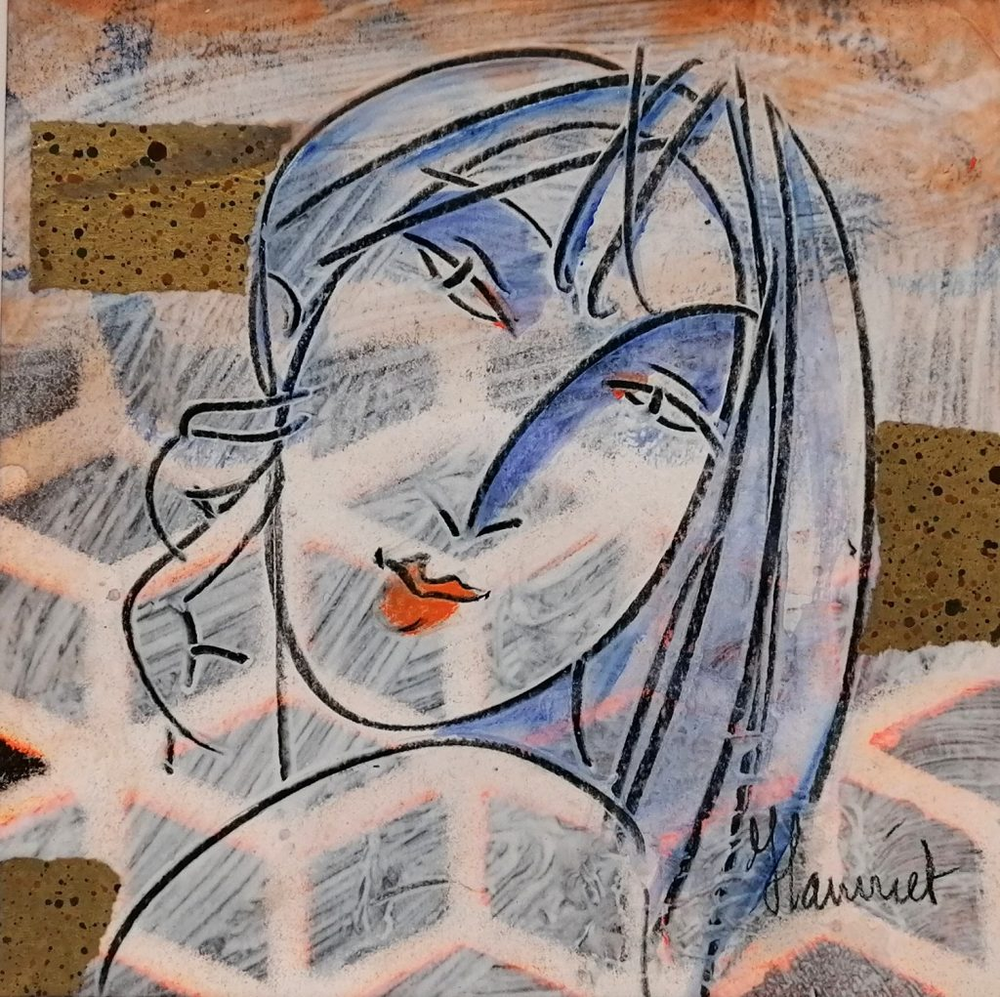

Un espace pour vous déposer, vous comprendre et vous retrouver
Certaines expériences continuent parfois à résonner longtemps : une émotion qui déborde, une peur difficile à expliquer, un épuisement, une sensation de blocage, des relations qui se répètent, un corps qui reste en alerte... ou simplement le sentiment de ne plus savoir comment avancer.
Une relation suffisamment sûre pour avancer
Le choix d'un praticien est profondément personnel. Au-delà des approches et des formations, la qualité de la relation compte : pouvoir se sentir accueilli·e sans jugement, respecté·e dans son rythme et suffisamment en confiance pour déposer ce qui est là.
Dans ces moments, être accompagné·e ne signifie pas qu'il y aurait quelque chose de défaillant en vous. Cela peut être une manière de ne plus rester seul·e avec ce qui est difficile à porter et de commencer à comprendre ce qui cherche à être entendu, reconnu ou apaisé.
Vous n'avez pas besoin d'arriver avec une histoire parfaitement ordonnée, de savoir exactement ce qui ne va pas ni de trouver les bons mots. Nous pouvons commencer par ce qui vous préoccupe aujourd'hui.
Je vous accueille dans un espace d'écoute thérapeutique chaleureux, vivant et respectueux de votre rythme. Nous avançons ensemble, sans forcer, vers davantage de compréhension, de sécurité intérieure et de liberté.
« Ici, nous partons de là où vous êtes. »

Une écoute de l'esprit et du corps
Je vous accueille dans un espace où nous prenons d'abord le temps de nous rencontrer. La relation thérapeutique se construit progressivement, dans le respect de votre rythme, de vos limites et de ce qui vous est possible à chaque instant. Il ne s'agit pas de tout raconter, de tout comprendre ni de changer rapidement, mais de créer ensemble les conditions d'une sécurité suffisante pour approcher ce qui vous traverse sans vous sentir seul·e ni submergé·e.
Par ma présence, mon écoute et mon ajustement, je veille à instaurer un lien fondé sur la confiance, le non-jugement et le respect de votre liberté. Cette sécurité se construit ensemble, pas à pas, en respectant les protections que vous avez développées au cours de votre histoire.
Découvrir mon approche